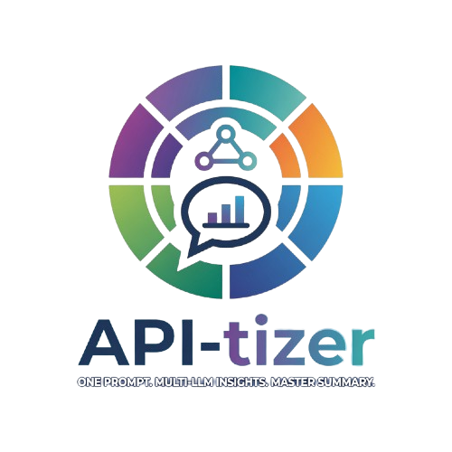

모든 데이터는 이 브라우저에 암호화되어 저장됩니다.
계정이 없으신가요? 회원가입
비밀번호는 8자 이상이며, 길수록 안전합니다. 잊으면 암호화된 데이터를 복구할 수 없습니다.
모든 대화에 항상 함께 전송되는 나만의 기본 정보입니다. 직업·관심사·말투·답변 형식 등을 적어두면, 어느 채팅방에서든 AI가 이를 기억한 채로 답합니다.
마스터로 지정한 모델이 모든 답변을 하나로 정리하고 소수 의견을 덧붙입니다. 로컬은 최대 3개까지 추가할 수 있어요 (Ollama / LM Studio 등 OpenAI 호환).
백업 파일은 별도 백업 암호로 암호화됩니다. 이 암호를 알면 다른 브라우저나 PC에서도 복원할 수 있습니다.
저장 공간 정보를 불러오는 중…
아래 작업은 현재 사용자의 API 키 · 설정 · 채팅 기록에만 적용되며 되돌릴 수 없습니다.
변경하면 모든 데이터가 새 비밀번호로 다시 암호화됩니다. 잠시 시간이 걸릴 수 있습니다.
http://(PC주소):8753 로 접속합니다. 서버를 켜면 콘솔에 정확한 주소가 표시됩니다.localhost 가 아닌 일반 http 주소에서는 로그인·암호화가 막힐 수 있습니다. 휴대폰에서 제대로 쓰려면 HTTPS 터널(cloudflared·ngrok 등)이 필요합니다.자주 쓰는 프롬프트를 저장해 두고 한 번에 입력창에 넣을 수 있습니다. 저장된 프롬프트는 암호화되어 이 계정에만 보관되고 백업에도 포함됩니다.